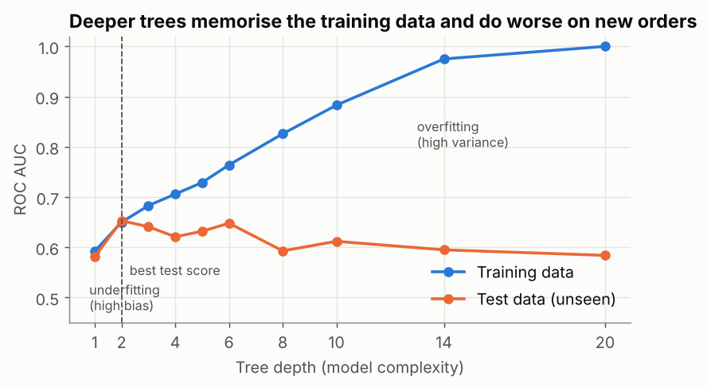

Feature Engineering & Bias/Variance: Better Inputs, the Right Complexity
Create and choose features from business knowledge, compare them fairly with cross-validation, and read a training-vs-test curve to tell underfitting from overfitting.
Before you start
- data-science-scripts.zipAll 21 Phase 2 lesson scripts (NumPy to research thinking), shared chart style, data folder and solutions · 230 KB
- orders_2025.csv4,246 clean orders for 2025 (synthetic, fixed seed): region, segment, channel, product, price, discount, status, delivery days, revenue · 472 KB
- customers_2025.csv63 customers: segment, region, sign-up date, credit terms · 3 KB
What is it?
- Feature engineering = creating, transforming and choosing the inputs a model learns from, usually using domain knowledge: logs for skewed amounts, bands for non-linear effects, flags for business rules, dates turned into seasons.
- Bias/variance describes two ways a model can fail:
| High bias (underfitting) | High variance (overfitting) | |
|---|---|---|
| What it does | Too simple to capture the pattern | Memorises noise in the training data |
| Training score | Low | Very high |
| Test score | Low | Much lower than training |
| Fix | More complexity, better features | Less complexity, regularisation, more data |
Why it matters at work
In real projects, better features and the right complexity beat fancier algorithms. Being able to say "this model is overfitting: here's the curve, here's the fix" is core ML literacy, and a standard interview topic.
The script is 19_ml_features_bias_variance.py. Every comparison uses 5-fold stratified cross-validation: the data is split into 5 parts, each part takes a turn as the test set, and we report the mean ± standard deviation. That's more reliable than one split (last lesson's scores moved from 0.64 to 0.69 with the split alone).
Part 1: engineer features from what you know
df["log_revenue"] = np.log10(df["revenue"]) # tame the long tail
df["large_order"] = (df["revenue"] > 3000).astype(int) # business rule: big orders behave differently
df["credit_band"] = df["credit_days"].map({0: "cash", 15: "15d", 30: "30d", 60: "60d"}) # non-linear effect
df["peak_season"] = df["month"].isin([9, 10, 11]).astype(int)
| Technique | Example | Why |
|---|---|---|
| Log transform | log_revenue |
Skewed amounts; one huge order shouldn't dominate |
| Flag from a business rule | large_order |
Ops says big orders get more scrutiny |
| Binning | credit_band |
Lets a linear model learn a jump between 30 and 60 days |
| Date parts | peak_season, weekday |
Seasonality the model can't see in a raw date |
Part 2: compare fairly, and be honest about the result
variants = [
("11 raw features", CATEGORICAL, NUMERIC),
("engineered set", eng_cat, eng_num),
("3 domain features", ["segment", "channel"], ["credit_days"]), # what the EDA pointed to
]
11 raw features 5-fold ROC AUC 0.659 ± 0.020
engineered set 5-fold ROC AUC 0.653 ± 0.020
3 domain features 5-fold ROC AUC 0.669 ± 0.022
Three lessons in one table:
- The engineered set didn't beat the raw features (0.653 vs 0.659, well inside the ± 0.02 noise). Feature engineering is an experiment, not a guaranteed gain.
- Three features chosen from the EDA (segment, channel, credit days) do as well as eleven, arguably slightly better. Fewer features = simpler, cheaper to maintain, easier to explain, less to go wrong.
- Every variant tops out around 0.65–0.67. The model is limited by the information in the data, not by how it's transformed. To predict cancellations better, you need new information (payment history, credit checks, sales-rep notes), and that's a conversation with the business, not more code.
Why didn't large_order help? The data says the effect is small:
mean size
large_order
0 0.066 3867
1 0.081 334
Large orders cancel at 8.1% vs 6.6%: a real but weak effect on only 334 orders. Check a feature's raw relationship before expecting it to help a model.
What binning revealed
cat__credit_band_cash -0.69
cat__credit_band_60d 0.92
num__large_order -0.01
cat__segment_Retailer 0.58
cat__channel_Phone 0.31
dtype: float64
Even without a score gain, the engineered model is more interpretable: cash customers have much lower risk, 60-day credit much higher, retailers and phone orders higher. That's a clear story for the credit team.
Part 3: bias vs variance with decision trees
A decision tree asks yes/no questions ("credit 60 days?", "retailer?"). Its depth controls complexity. Train trees from depth 1 to 20 and score them on training and test data:
depth train_auc test_auc
1 0.592 0.581
2 0.650 0.653
3 0.683 0.641
4 0.706 0.621
5 0.729 0.632
6 0.764 0.648
8 0.826 0.593
10 0.883 0.612
14 0.975 0.595
20 1.000 0.584

- Depth 1: both scores low → underfitting (high bias).
- Depth 2: best test score, train ≈ test → a good balance.
- Depth 8–20: training climbs to a perfect 1.000, test falls → overfitting (high variance). A depth-20 tree has memorised the training orders, noise included.
The gap between the training and test lines is the clearest diagnostic you have.
Choose complexity with cross-validation, not the test set
Picking the depth by looking at the test scores above would leak the test set into your decision. Do it with cross-validation on the training data:
depth 2: CV ROC AUC 0.624 ± 0.060
depth 3: CV ROC AUC 0.631 ± 0.061
depth 4: CV ROC AUC 0.619 ± 0.042
depth 8: CV ROC AUC 0.566 ± 0.059
Depths 2–4 are statistically tied (± 0.06); depth 8 is clearly worse. Choose the simplest of the tied options, then score it once on the test set. (GridSearchCV automates this search.)
Common mistakes
| Mistake | What happens | Fix |
|---|---|---|
| Assuming engineered features always help | Complexity without benefit | Compare with cross-validation; keep what wins |
| Choosing settings by test-set score | Over-optimistic final score | Cross-validation on training data; test once |
| Reading a single score | Noise mistaken for improvement | Mean ± std over folds |
| Only looking at the test score | Can't tell under- from overfitting | Plot training and test scores |
| Endless tuning when the data has little signal | Weeks for +0.01 | Look for new information sources |
Try it yourself
Task: A depth-14 tree overfits (train 0.975, test 0.595). Without changing the depth, try min_samples_leaf = 20 and 50 (each leaf must contain at least that many orders). What happens to the training and test scores?
Show the solution
for leaf in [1, 20, 50]:
t = DecisionTreeClassifier(max_depth=14, min_samples_leaf=leaf, random_state=0).fit(X_tr, y_tr)
print(f"depth 14, min_samples_leaf={leaf:>2}: train {roc_auc_score(y_tr, t.predict_proba(X_tr)[:, 1]):.3f}"
f" | test {roc_auc_score(y_te, t.predict_proba(X_te)[:, 1]):.3f}")
depth 14, min_samples_leaf= 1: train 0.975 | test 0.595
depth 14, min_samples_leaf=20: train 0.854 | test 0.608
depth 14, min_samples_leaf=50: train 0.775 | test 0.642
Larger leaves stop the tree from making rules about a handful of orders: the training score falls (less memorising) and the test score rises (better generalisation). That's regularisation: limiting complexity in a different way than depth.
Quick quiz
1. Training AUC 1.00, test AUC 0.58. What's the diagnosis?
- Underfitting (high bias)
- Overfitting (high variance)
- A perfect model
Show answer
B.
2. Three features score the same as eleven. Which do you prefer?
- Eleven: more information
- Three: simpler, easier to explain and maintain, with no loss
- It doesn't matter
Show answer
B.
3. How should you choose a tree's depth?
- Pick the depth with the best test score
- Cross-validate on the training data, then check the chosen model once on the test set
- Always use the maximum depth
Show answer
B.
Summary
- Feature engineering: logs, bands, rule-based flags, date parts, and choosing features from domain knowledge. Always test whether it helps.
- Use cross-validation (mean ± std) for every comparison; touch the test set once.
- Bias/variance: plot training vs test scores against complexity; pick the simplest model at the top of the test curve.
- When every model plateaus, the limit is the information in the data; find new data, not new tricks.
Job-ready check
Interview question: "How do you know whether to make your model more or less complex?"
Strong answer: "I compare training and validation scores. If both are low, the model underfits: I add better features or complexity. If training is much higher than validation, it overfits: I simplify, regularise or get more data. I choose settings with cross-validation on the training data and report the final score once on a held-out test set."
Mini project: For the late-delivery model from lesson 1, engineer two features (e.g. peak season, region × large order), compare raw vs engineered with 5-fold CV, and draw the train/test curve for tree depth.
Free resources to go deeper
- Cross-validation: evaluating estimator performance
- Underfitting vs. Overfitting
- Kaggle Learn: Feature Engineering
Last reviewed: 2026-10-09